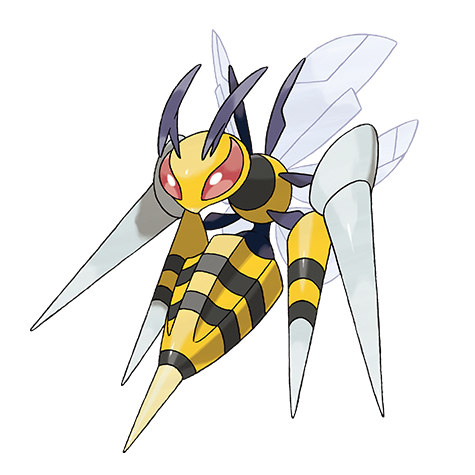
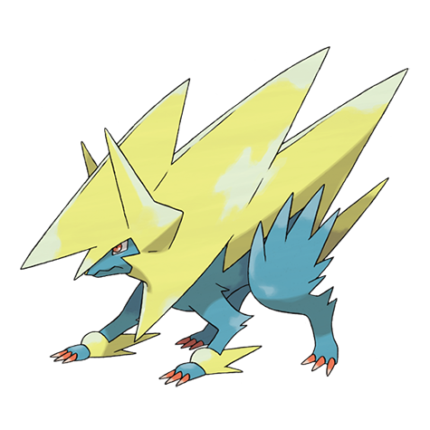
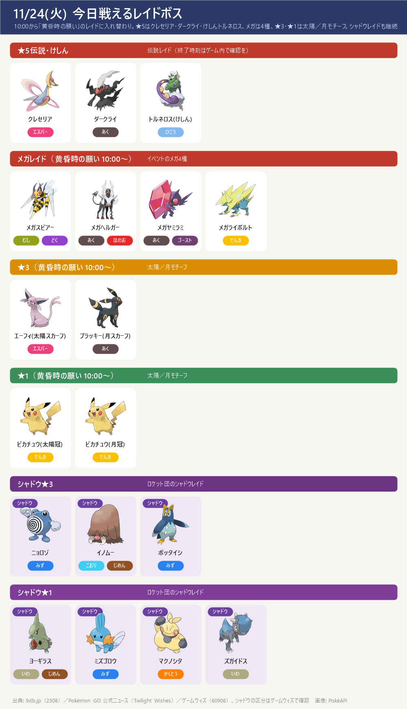
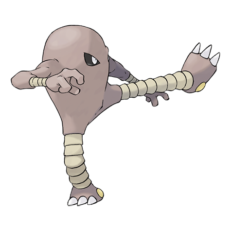
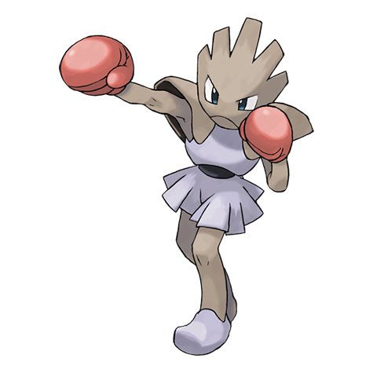
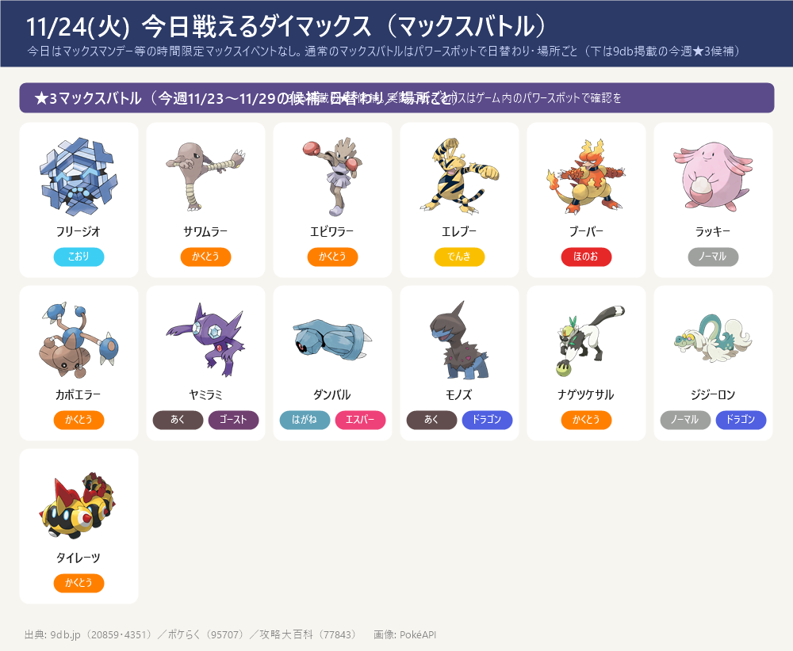
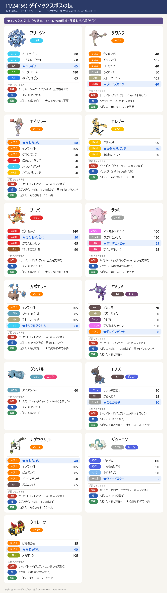

今日のポイント
- 今日10:00から新イベント「黄昏時の願い」開始（〜11/30(月)20:00）。レイドが入れ替わります。★3は
 エーフィ(太陽スカーフ)・
エーフィ(太陽スカーフ)・ ブラッキー(月スカーフ)、★1は
ブラッキー(月スカーフ)、★1は ピカチュウ(太陽冠)・ピカチュウ(月冠)、メガは
ピカチュウ(太陽冠)・ピカチュウ(月冠)、メガは
メガスピアー・ メガヘルガー・
メガヘルガー・ メガヤミラミ・
メガヤミラミ・
メガライボルトに。 メガジュペッタは10:00で終了。★5の
メガジュペッタは10:00で終了。★5の クレセリア・
クレセリア・ ダークライ・
ダークライ・ トルネロス(けしん)は9dbの今日のレイド日程では継続表示（前日情報では10:00終了予定でした→ゲーム内で確認を）。イベント中は捕獲時のほしのすなが2倍（GOパス デラックスで3倍）
トルネロス(けしん)は9dbの今日のレイド日程では継続表示（前日情報では10:00終了予定でした→ゲーム内で確認を）。イベント中は捕獲時のほしのすなが2倍（GOパス デラックスで3倍） - 今夜は満月。リングマを夜に進化（アメ100）させると
 ガチグマになります（満月の夜のみ）
ガチグマになります（満月の夜のみ） - 火曜のおひろめデイ（毎週10:00〜20:00）は、11/24の対象がポケらく・9dbともに未発表でした→ゲーム内で確認を。この先：11/25(水) 伝説レイドに
 デオキシス各フォルム復刻＆メガメタグロス登場、18:00〜19:00レイドアワー（デオキシス）／11/26(木) 18:00〜19:00 スポットライトアワー：
デオキシス各フォルム復刻＆メガメタグロス登場、18:00〜19:00レイドアワー（デオキシス）／11/26(木) 18:00〜19:00 スポットライトアワー： オンバット／11/30(月) マックスマンデー：
オンバット／11/30(月) マックスマンデー： フリージオ
フリージオ
今日戦えるレイドボス
10:00から「黄昏時の願い」のレイドに入れ替わり。★5はクレセリア・ダークライ・けしんトルネロス、メガは4種、★3・★1は太陽／月モチーフ。シャドウレイドも継続
- 10:00にレイドが入れ替わります。メガジュペッタは10:00で終了、黄昏時の願いのメガ4種に。★5クレセリア・ダークライ・けしんトルネロスは9dbの11/24レイド日程では継続表示ですが、前日情報では10:00終了予定でした（終了時刻はゲーム内で確認を）

今日戦えるダイマックス（マックスバトル）
今日はマックスマンデー等の時間限定マックスイベントなし。通常のマックスバトルはパワースポットで日替わり・場所ごと（下は9db掲載の今週★3候補）
- 今日はマックスマンデーなどの時間限定マックスイベントはありません（前日11/23の
 ニャスパーは21:00で終了。次は11/30(月) マックスマンデー：フリージオ）
ニャスパーは21:00で終了。次は11/30(月) マックスマンデー：フリージオ） - 通常のマックスバトル（★1〜★3）はパワースポットで日替わり・場所ごとに登場します。戦えるボスはゲーム内のパワースポットで確認してください
- 9db（20859）が挙げる今週（11/23〜11/29）のパワースポット候補：★1はヒトカゲ・ゼニガメ・ピカチュウなどの基本ポケモン多数、★2はニャスパー・ワンリキー・イーブイ・ツボツボ・ニューラ・ホエルコ・ヒンバス・ダルマッカ、★3は下のカード（フリージオ・

サワムラー・
エビワラーなど） - 【各ボスのスペシャルアタック候補】（下のカード。数字はレイド・マックスバトルでの威力。★＝ボスが使ってくると楽な、いちばん弱い技（ボスと同じタイプの技は1.2倍で計算。こちらのポケモンとの相性は見ていない）。戦闘中に技名が出たら受け役を合わせる）


サカキ対策（シャドウゼクロム）：攻略ページへ（別ページ）
締め切り・やること：まとめページへ（別ページ）
この先の予定（タップで開閉）
- 11/24(火) 10:00 黄昏時の願い開始（〜11/30(月)20:00）／メガジュペッタ終了／夜は満月（リングマをガチグマに進化可能）
- 11/25(水) 5:00〜 伝説レイドにデオキシス（各フォルム）復刻・メガレイドにメガメタグロス登場（〜12/1）・18:00〜19:00 レイドアワー（デオキシス）
- 11/26(木) 18:00〜19:00 スポットライトアワー：オンバット（捕まえるとアメ2倍）
- 11/30(月) 18:00〜19:00 マックスマンデー：フリージオ／黄昏時の願い 20:00 終了
- 12/1(火) シャドウ化身トルネロス終了
サイトで違っていた点（タップで開閉）
- レイドの入れ替わり：9dbの11/24日程では10:00で黄昏時の願いのレイドに切替。切替時刻・終了時刻はゲーム内で確認を
- ★5クレセリア・ダークライ・けしんトルネロス：前日情報では11/24 10:00終了予定だったが、9db（2308）の11/24レイド日程では継続表示。ゲーム内で確認を
- 黄昏時の願いのレイド（★3エーフィ太陽/ブラッキー月、★1ピカチュウ太陽冠/月冠、メガ4種）は 9db（2308）× 公式ニュース（Twilight Wishes）で一致
- シャドウ★3・★1：ゲームウィズはシャドウとして表示、9dbは同じ表に混ぜて表示。出現ポケモンは一致したため区分はゲームウィズに合わせて記載
- おひろめデイ：11/24(火)の対象はポケらく（71607）・9db（4351）ともに未発表。黄昏時の願い開始と重なるためゲーム内で確認を
- マックスバトルの固定ボス：ポケらく（95707）は固定ボスを「なし」と表示（日替わり・場所ごとのため）。9db（20859）掲載の今週（11/23〜11/29）候補を参考に載せた
- 黄昏時の願いの野生出現ポケモン：サイトごとに記載が食い違ったため（公式：ピッピ・ヒトデマン・リグレーほか／9db：複数パターン）本ページには詳細を載せていない
- ダイマックスボスの技候補はゲームデータ(PvPoke)から（おんがえし・やつあたりは除外）、威力は pogoapi.net
出典: 9db.jp/pokemongo（開催イベント一覧4351・レイド日程2308・マックスバトル日程20859・黄昏時の願い26626）／pokemongo.gamewith.jp（60906）／pokemongo-raku.com（95707・71607）／pokemon.gamepedia.jp/go（攻略大百科77843）／Pokémon GO 公式ニュース（Twilight Wishes）／pvpoke.com ゲームデータ（技候補）
画像: PokéAPI ／ 2サイト以上で一致した情報だけを載せています